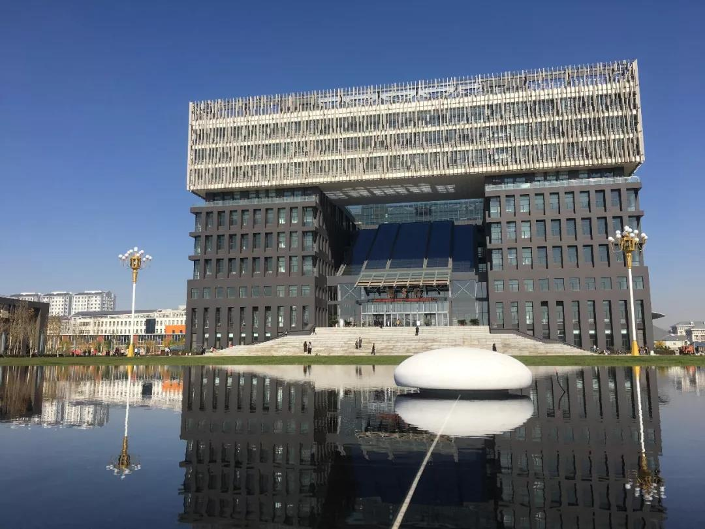
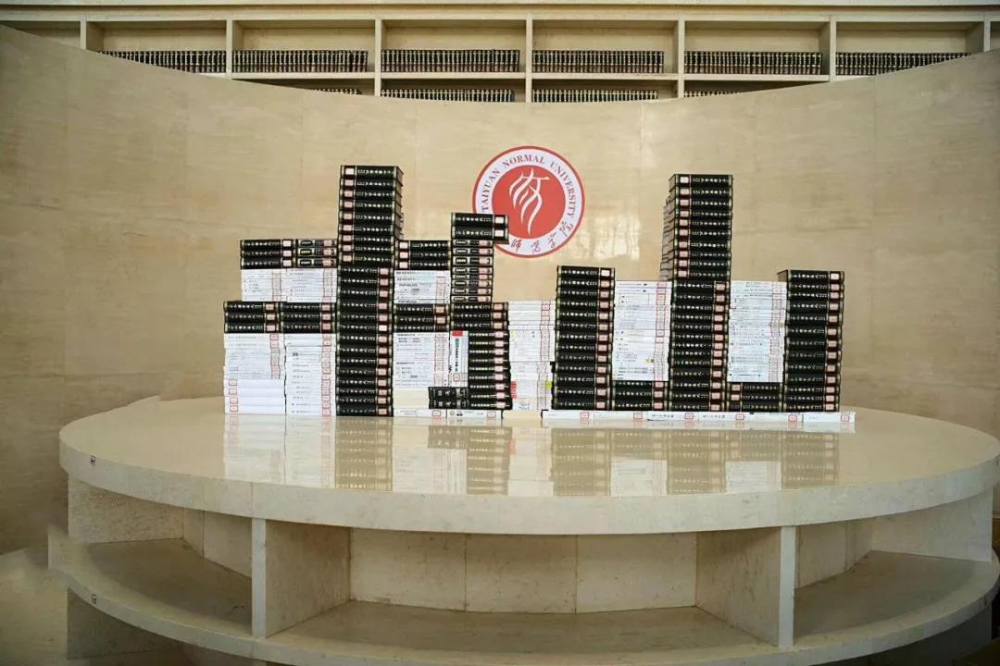
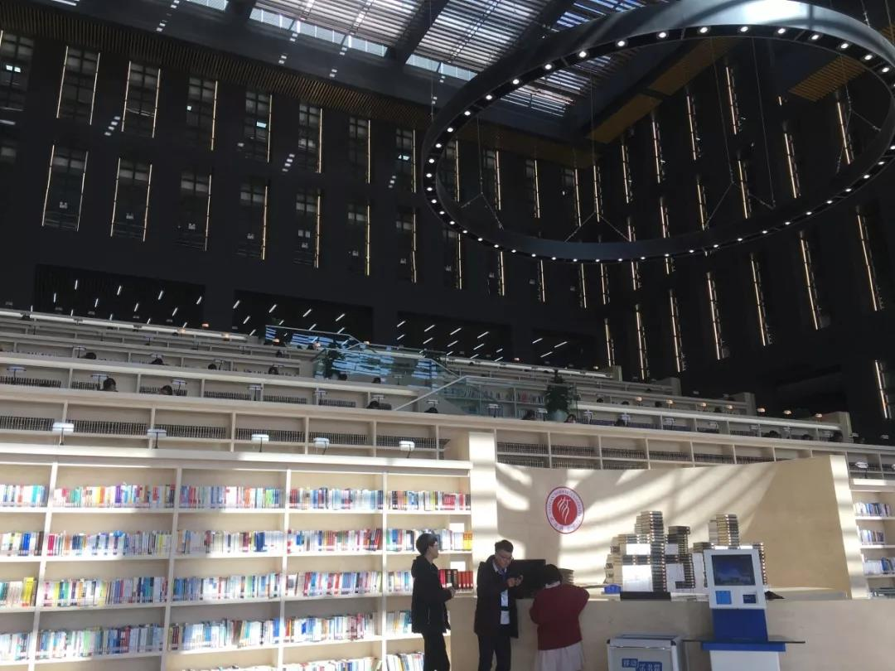
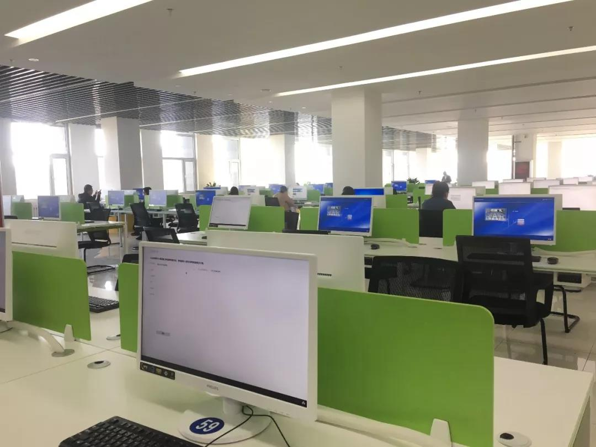
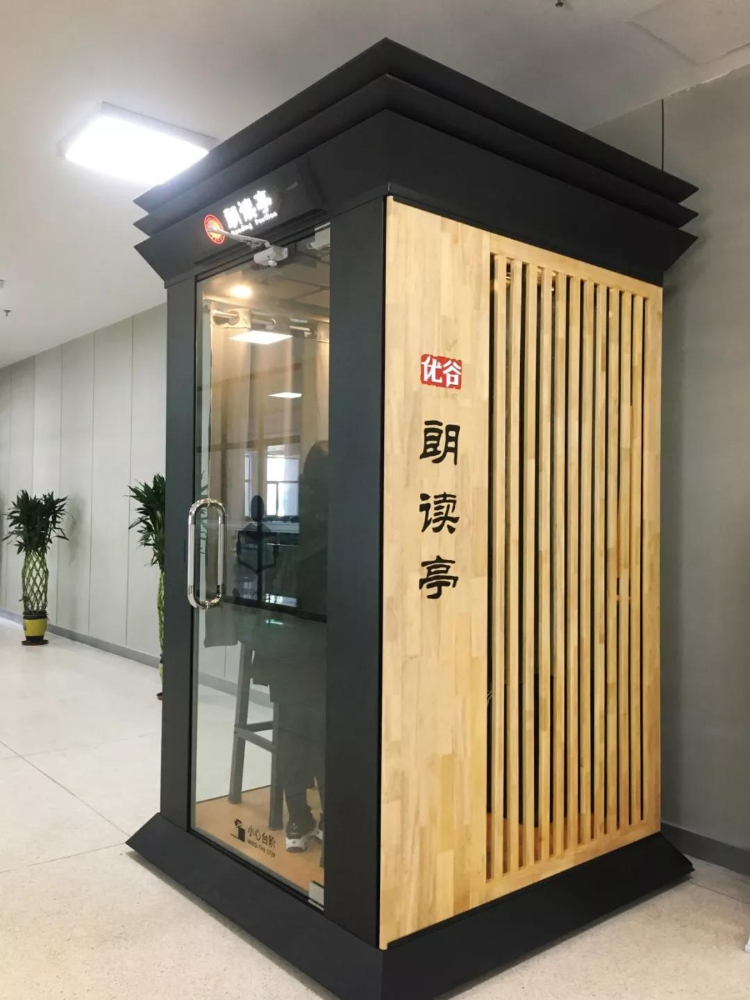
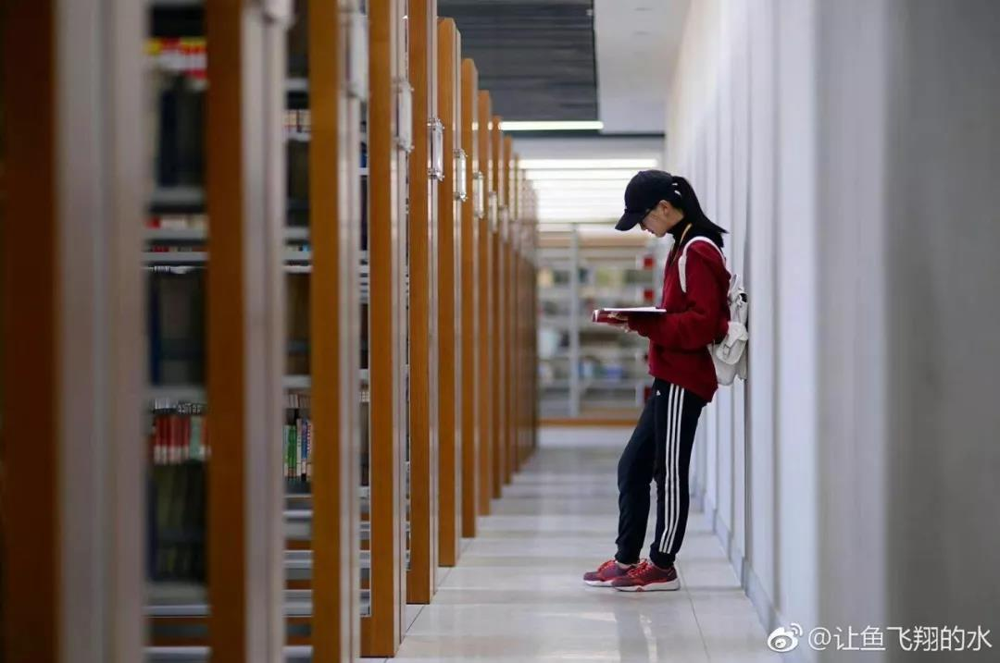

太原师范学院图书馆简介
图书馆建筑面积65000平方米
藏书136万多册

在设计上,图书馆引入传统江南民居中的“天井式”建筑风格,屋顶形似打开的书籍,四周的阅览室均相互连通,中间围成一个“天井”,既保证了通风和采光,还加强了结构的整体性。
整座图书馆，最夺目的是
中间的“书山”


一个巨大的圆环形吊灯下，阶梯式的布局，使得各种书籍组成了一座巨大的书山，直观地表现了“书山有路勤为径”，“书籍，是人类进步的阶梯”等内涵。
每排书架前都设有一排书桌，桌子上备有台灯，光线不足的时候，打开台灯，真的很人性化。
每层阅览室相互连通

使同学们在图书馆内的活动更加便捷,穿梭于各个楼层之间,寻找自己喜爱的图书.
图书馆的第六层是电子阅览室,同学们可以在这里自由查阅网络资源.
在电子阅览室的外面有一个朗读亭
可以自行选择文章朗读

还可以配上喜爱的音乐,微信扫码后还能分享给自己的小伙伴呢.

浓浓的文化内涵、弥漫的书香味，都是值得细细品味，值得反复咀嚼的，所以，图书馆可不是为了炫耀颜值，而是为了通过，人性化的设计 舒适的环境，留下更多的读者,传递更多的知识。
如此美丽诱人的图书馆,你不想来坐坐吗,太原师范学院的图书馆,对外开放哦,凭单位或本人有效证件,与馆内工作人员联系登记即可进馆。切记，一定要遵循图书馆各项规章制度,保持安静,爱护公物。
图文来源微信公众号：黄河头条部分图源见水印